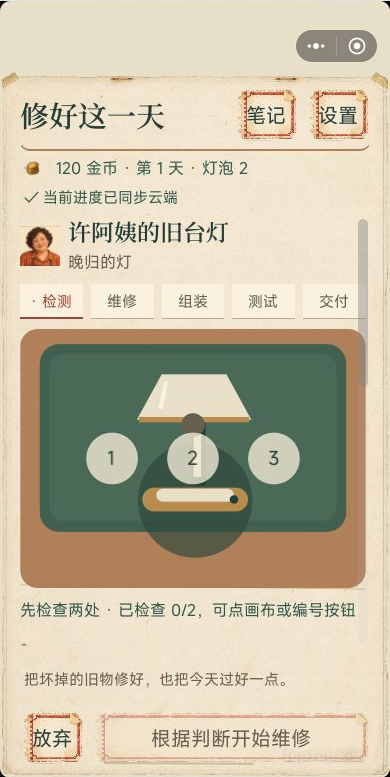
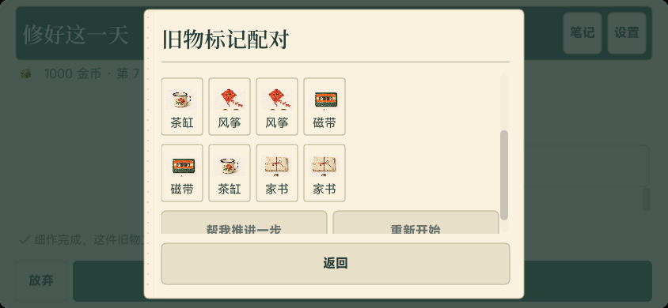
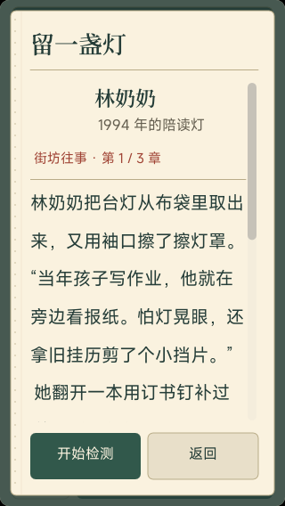

诊断与维修拆成明确阶段
检测、维修、组装、测试和交付各自承担清晰任务。不同故障需要不同操作，玩家先理解症状再处理，避免所有旧物都退化为同一种点击流程。
TAPTAP MAKER / 个人 AI 游戏实践
在街角修理铺诊断台灯、音乐盒和桌面风扇，清理、校正、换件，再听街坊讲述旧物背后的往事。分步维修、短益智与店铺成长组成温和的日常循环。
GAMEPLAY / 核心体验
接下委托并阅读症状，先定位故障，再选择对应工具进行清理、线路处理或机关校正；组装测试后交付，获得报酬和故事进展。当前包含三类旧物、九种故障和二十四种委托，六位街坊的十八章故事按十二个营业日逐步展开。
IN-GAME CAPTURES / 游戏画面
新版修理铺图从真实 Maker 预览中裁出游戏区；后两张为早期实际运行画面，已在图注区分版本。



DESIGN / 规则与取舍
检测、维修、组装、测试和交付各自承担清晰任务。不同故障需要不同操作，玩家先理解症状再处理，避免所有旧物都退化为同一种点击流程。
扫雷式漏点排查、旧物记忆配对和九宫格照片拼图分别提供观察、记忆和空间整理体验，并与修理铺情境相连。
故事设有前章依赖和固定日程，让角色关系随维修逐步展开。交付报酬连接工具、工作台与展示柜升级，店铺共三个成长阶段。
无营业倒计时，失误不扣材料，提供免费提示。近期迭代纸面票券风格、按钮三态、大字和棋盘适配，照顾小屏阅读与操作。
MY PRACTICE / 项目推进
通过 AI 协作将诊断、维修、短益智、叙事和轻经营组织为完整循环，推进委托与故事内容结构。根据反馈持续调整怀旧纸面 UI、工具提示和小屏按钮，整理实际玩法与宣传资料的对应关系，体现系统规划和移动交互打磨。
大按钮与棋盘适配版已于 2026 年 10 月 15 日取得线上更新成功回执。第一张展示该轮新版，配对和故事图保留早期试玩界面，用于说明具体玩法；实体手机及跨设备完整流程仍待继续验收。
TAPTAP / 游戏入口
TapTap 页面提供公开介绍与平台支持的试玩入口。平台当前可玩的内容以该页面为准，本页同时记录开发中的后续迭代。